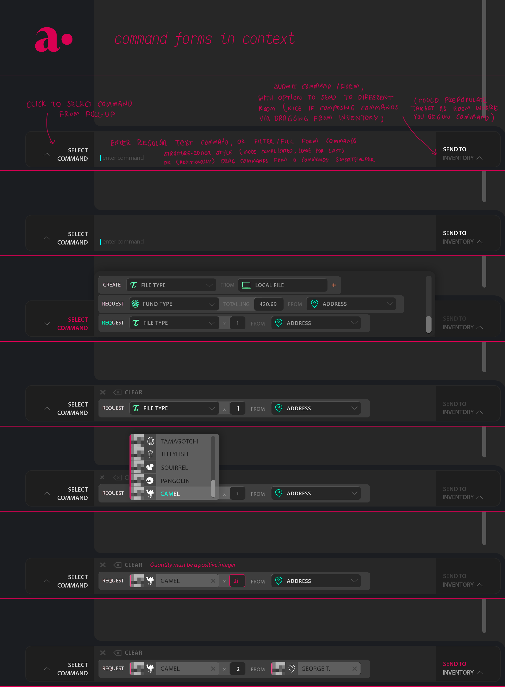
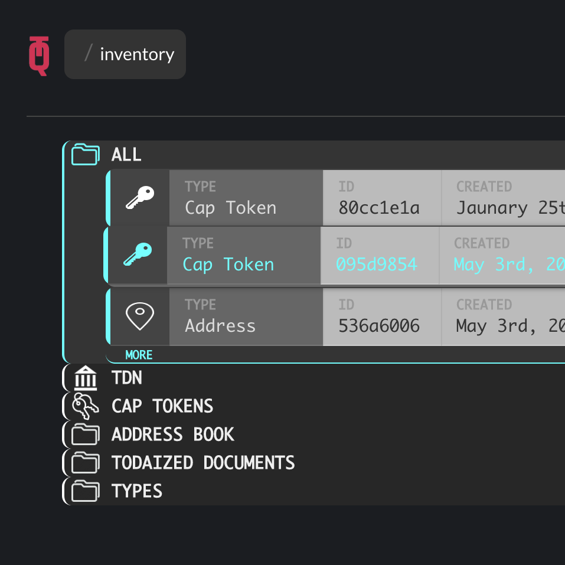
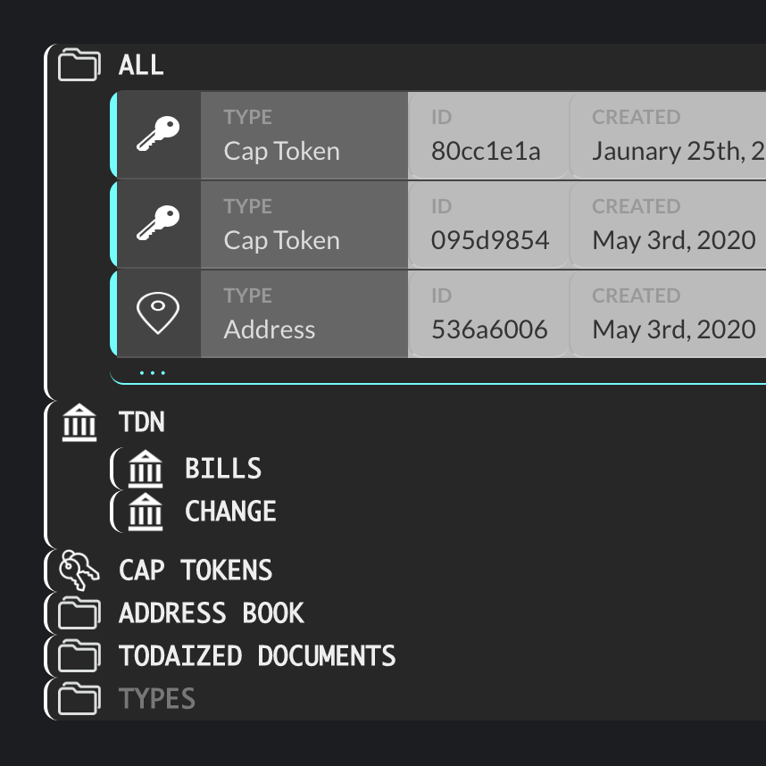

This is a collection of screencaps and sketches of a project I made during summer 2020 while at TODAQ. TODAQ is working on a protocol and associated services for distributed digital asset management. The below represents my contributions to bootstrapping the personal inventory system for ADOT, a protocol supporting simple client apps built on TODAQ's distributed ownership platform.
It was implemented over a couple months as an electron app using vue.js. This was my first web UI work so I made sure to follow best practices, including making exhaustive use of every CSS selector
All files in ADOT/TODA are represented by their sha256 hash. This represents the path to the file through the merkle trie defining the TODA protocol's central data structure.
Previous UI was lousy with with hexadecimal hashes and prefixes. I wanted to declutter without completely jettisoning the crypto connotations of the raw hashes. After a few iterations I decided on depicting hashes as squares, with the grayscale value of each pixel representing two bytes of the hash. I had a more ambitious plan to animate these in a way connoting (a caricature of) a hash calculation, but I settled for a quick CSS animation using opacity and inversion which suffices to bring them to a light simmer
The core system is a hierarchial, expanding file manager, supporting both manually curated selections of files and customizable smartfolders which aggregate files along certain dimensions.
Drag and drop dropfolders let users specify predicates and aggregator functions which determine what can be added to them. These were used to implement forms requesting certain specific assets, or quantities of certain asset types.
In ADOT, different actions/recipes which you can perform with files, like making transactions, requesting transactions, and creating new assets are themselves expressed as files. I wanted to tactilize these 'form' files through a structured-editing style interface, where tangible forms representing actions could be dragged out of an 'action' smartfolder, onto a command line where their fields could then be populated, also by drag-and-drop. I intended to push this further, permitting users to simply start typing in form text into the command line to autocomplete-style instantiate a form and begin populating it, somewhat in the vein of Angert and Elkammash's CLUI. This aspect didn't get done in time though.
Here's a walkthrough of a particular interaction, submitting a request for assets of a certain type:

A previous style iteration. A big part of TODA is about making digital files behave like real things, so I wanted to connote a chunkiness and physicality to file cards/tiles
I was keen on asserting the physicality of file tiles while retaining a clean-feeling presentation. One angle I explored was subtle plastic-molding-mstyle detailing, as can be seen between the fields on the above tiles. Below: On hover, tiles attempt to jump into your hand.
 